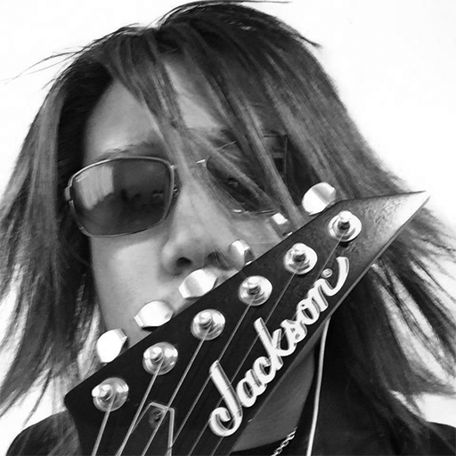

Kenzo Fujiki
Designer and Musician
Contact Infomation
e-mail 1: kaiser.ken.loverockxyz7@gmail.com
e-mail 2: kfujiki1105@eagles.ewu.edu
Phone: 509-413-8606
Profile
Date of Birth: 1989/11/5
Languages Spoken: English, Japanese
Comments from Kenzo
My name is Kenzo Fujiki. I am originally come from Osaka, Japan. I go to Eastern Washington University to get the Bachelor Degree in Visual Communication Design. I have been working hard since I started studying. When I was a little, I lived in Spokane for a year with my family. My father needed to help his friend who used to work at Whitworth University. My dad is a Physical Education Professor at his university in Japan now. From that experience, I wanted to go back to Spokane, so I decided to come back to United States! In the future, I want to work with designing and playing music!
Skills
Education
- 2005 ~ 2008 - Mino Jiyu Gakuen High School: High School Diploma
- I studied general studying in my country Japan for three years before I came to the US.
- 2009 ~ 2012 - Spokane Falls Community College: Associate of Arts
- I studied University requirements for transfering to 4-year university and Music for few years.
- Now - Eastern Washington University: Bachlor of Arts in Design
- Now, I am studying Visual Communication Desing as a major and 3D Modeling as a minor at EWU. I am still rookie of drawing pictures. So I want to be improved more!!